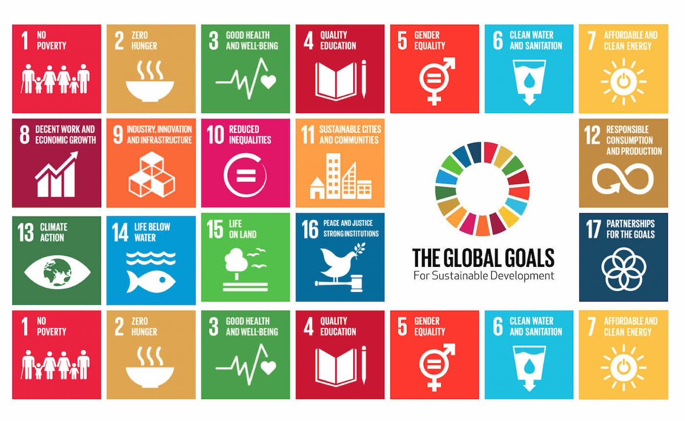

Sustainability or sustainable development is a concept developed in response to the many problems modern societies face, including environmental, social and economic. The “Our Common Future” report of the United Nations defined sustainable development as one which “meets the needs of the present without compromising the ability of future generations to meet their own needs”.
The United Nations (UN), as the largest global organisation, spanning 193 nations, has become the main platform for addressing universal issues such as climate change, poverty, hunger, and is the foremost advocate for achieving sustainable development. This is best reflected in the 17 Sustainable Development Goals the organisation has devised. They cover a myriad of current issues and focus the efforts of member states by providing guidance and worldwide statistics. The goals are as follows:

As one of the leading countries in the UN, the United Kingdom has devised its own country-wide strategies to address the problems outlined by the Sustainable Development Goals.
Recently, a lot of attention has been devoted to the 2050 challenge of reducing greenhouse gas emissions by 80% relative to 1990 levels. This ambitious target foresees a shift from fossil fuel-derived energy to renewables, such as wind, tidal, hydro, solar and biofuels. Numerous pathways can be devised for this transition and the most promising ones are made available on “The 2050 Calculator” website. In addition, this interactive webpage enables users to apply their personal predictions of consumer behavior and industry shifts and create a custom energy transition pathway, calculation the change in CO2 emission in the end.